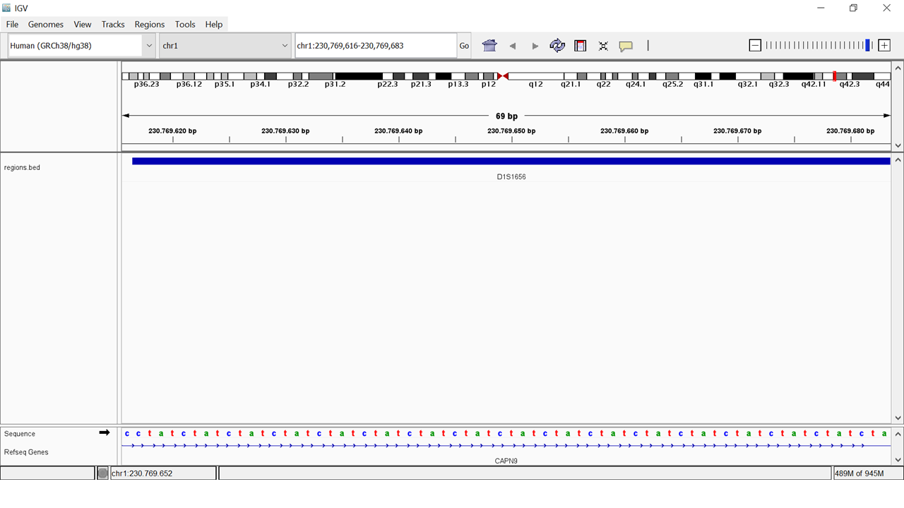

cd ~
mkdir -p ~/miniconda3
wget https://repo.anaconda.com/miniconda/Miniconda3-latest-Linux-x86_64.sh -O ~/miniconda3/miniconda.sh
bash ~/miniconda3/miniconda.sh -b -u -p ~/miniconda3
rm -rf ~/miniconda3/miniconda.sh
~/miniconda3/bin/conda init bash
~/miniconda3/bin/conda init zshPrimeiros passos
Configurações de sistema
Antes de iniciarmos o tutorial, é imperativo garantir que o sistema atenda às configurações mínimas para uma experiência estável. Utilizaremos sistema Linux. Recomenda-se que a máquina disponha de, no mínimo, 40 GB de armazenamento, 8 GB de memória RAM e um processador i5/i7 ou compatível. No entanto, para uma performance ideal e considerando o potencial de expansão das aplicações, encorajamos a utilização de um sistema com mais de 60 GB de armazenamento e, no mínimo, 16 GB de memória RAM. Essas configurações mais robustas assegurarão não apenas a instalação suave do software, mas também a capacidade de executar múltiplas aplicações de forma eficiente, proporcionando uma experiência mais fluida e responsiva ao usuário.
Softwares necessários
Usuários Windows
- WSL (Windows Subsystem for Linux)
- IGV (Robinson et al. 2011)
- FASTQC
- notepad++
Tutorial para instalar o
WSL
Siga o tutorial da microsoft para instalar o WSL.
Usuários windows
Usuários windows precisam instalar o Subsistema Windows para Linux (WSL).
Os softwares FASTQC e IGV precisam ser instalados no windows e não no WSL.
Anote a senha que você configurou. Ela será fundamental durante o uso do WSL!!!!
No Ubuntu
- IGV (Robinson et al. 2011)
- FASTQC
- Trimmomatic (Bolger, Lohse, and Usadel 2014)
- bwa (Li 2013)
- minimap2 (Li 2018, 2021)
- samtools (Danecek et al. 2021)
- freebayes (Garrison and Marth 2012)
- vcftools (Danecek et al. 2011)
- bcftools (Danecek et al. 2021)
- NanoPlot (De Coster and Rademakers 2023)
- chopper (De Coster and Rademakers 2023)
- HipSTR (Willems et al. 2017)
- gzip
Instalando via CONDA
Usar o CONDA para criar um ambiente garante que todos os participantes estejam utilizando exatamente os mesmos programas e versões, evitando problemas que podem surgir por diferenças entre os computadores. Assim, você terá todas as ferramentas necessárias instaladas de forma organizada e padronizada, facilitando o acompanhamento durante o workshop, mesmo se você não tiver muita experiência com a instalação de programas. Isso ajuda a garantir que todos possam focar no conteúdo sem se preocupar com configurações complicadas.
Instalando o CONDA via Miniconda
Utilize os comandos a baixo
Reinicie o sistema. No WSL é só fechar a abrir novamente.
Baixe o arquivo de configuração do CONDA para o Workshop clicando aqui.
Crie e ative o ambiente
conda env create -f workshopbioinfo.yml
conda activate workshopbioinfoInstalação via linha de comando
Ao terminar a instalação do WSL e de configurar seu usuário no linux utilize os seguintes comandos:
sudo apt-get update
sudo apt-get upgradeEstes comandos irão garantir que o seu sistema esteja atualizado.
Sobre o comando
sudo
O comando sudo permite ao usuário executar comandos com permissão superior. Para isso você precisará da sua senha (ou do administrador)!
Para instalar softwares no linux (diretamente ou no WSL) utilize o comando apt install da seguinte forma:
sudo apt install [SOFTWARE]Dados utilizados
Baixe os dados que serão utilizados neste workshop via OneDrive;
Utilize o email correto
Para ter acesso aos dados utilize o email que foi fornecido durante a inscrição no evento. Em caso de erro, entre em contato com a organização.
Os dados totalizam ~20 GB. Atente-se para isso!!!
Confira os arquivos baixados
Ao realizar o download, confira se os arquivos foram baixados corretamente.
As amostras utilizadas neste curso foram sequenciadas pelo projeto 1000 genomas.
Regiões com reads
Os arquivos fastq fornecidos para este curso foram preparados contendo apenas as regiões que estão nos arquivos bed fornecidos na pasta Genome/.
Exemplo:
Abrindo o arquivo BED podemos notar que ele contém a informção da posição baseda no cromossomo (coluna 1) e seu inicio (coluna 2) e fim (coluna 3). De fato, estas são as únicas colunas obrigatórias de um BED. A coluna 4 neste arquivo contém anotação da região que iremos trabalhar.
Quando abrimos o arquivo BED no IGV ele marca em azul as posições das coordenadas genomicas:
Para visualizar a região no IGV devemos utilizar a seguinte notação: {cromossomo}:{start}-{end}. Para o D1S1656 fica chr1:230769616-230769683.

| Amostra | Sexo | População |
|---|---|---|
| HG00097 | F | British |
| HG00142 | M | British |
| HG00143 | M | British |
| HG00145 | M | British |
| HG00263 | F | British |
| HG00277 | M | Finnish |
| HG00372 | M | Finnish |
| HG00463 | M | Han Chinese |
| HG01063 | M | Puerto Rican |
Os dados estão contidos nesta estrutura de pastas descritas a baixo:
WorkshopBioinfo2024/
├── Genome/
├── R10/
│ ├── fastq/
│ └── bam/
├── Exome_ShortReads/
│ ├── fastq/
│ └── bam/
├── WGS_ShortReads/
│ ├── fastq/
│ └── bam/
└── SimulatedReads/